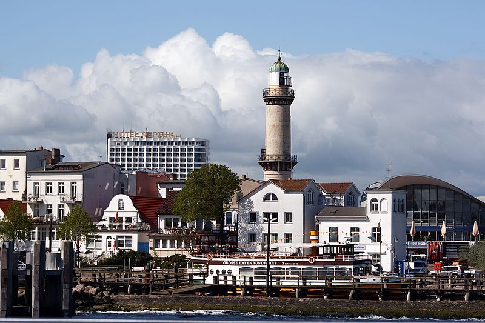

Как пользоваться?
- При наведении курсора на изображение, применяется фильтр blur. А чем правее курсор, тем сильнее будет эффект!
- Ctrl - фильтр grayscale
- Alt - фильтр hue-rotate
- Shift - фильтр brightness

Фильтр: none (0)